95% reference interval (RI)
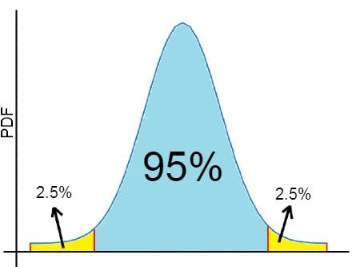
모집단에서 개인 검사값의 중앙 95%가 위치하는 범위
[L, U] = [2.5th percentile, 97.5th percentile] · P(L ≤ X ≤ U) = 0.95모집단 전체는 알 수 없음 → 표본에서 L, U 추정
표본을 다시 뽑으면 L, U도 달라짐 → 하한·상한 각각에 추정의 불확실성 = confidence interval
서울의과학연구소 의학통계 강의
2026-09-01
연구 질문 → 분석 단위 → 통계 방법
QUESTION
핵심 질문
범위 · 차이 · 비율 · 군집 · 변화
UNIT
분석 단위
사람 · 검체 · 조직 · 분리 균주
EVIDENCE
결과 표현
분포 · 회귀 · 차이 · 비율 · 프로파일
개념 → 논문 Figure/Table → 해석
01 · RANGE
검사값의 정상 범위
PTH reference interval
KNHANES 2024 · PTH 측정 4,502명
주요 분석 155명 · Step 11 82명
Percentile · Bootstrap · Survey weighting
BMC Endocr Disord 2026;26:176
GC Labs
02 · AGREEMENT
두 검사법의 일치도
Triglyceride harmonization
동일 혈청 98쌍
Passing–Bablok · Bland–Altman · Bias
Ann Lab Med 2025;45:291-299
GC Labs
03 · PROPORTION
집락률·내성률 차이
GBS colonization
질 면봉 배양 33,721건
Proportion · Chi-square · Fisher’s exact
Yonsei Med J 2022;63:717-723
서울의과학연구소
04 · MULTIPLICITY
여러 미생물 동시 비교
CRC tissue microbiome
환자 38명 · 조직 39개
qPCR · Diversity · Relative abundance · FDR
Sci Rep 2020;10:19915
연세대학교
05 · PROFILE
계통·내성 조합의 시간 변화
GBS WGS
과거 37 vs 최근 209 균주
ST/CC · ARG · AMR profile
Ann Lab Med 2025 (alm.2025.0439)
서울의과학연구소
개인 · 논문 1
PTH 검사값 · 주요 155명 / Step 11 82명
동일 혈청 검체 · 논문 2
두 검사법의 측정값 · 98쌍
배양 검체 · 논문 3
질 면봉 33,721건
조직 검체 · 논문 4
환자 38명 · 조직 39개
분리 균주 · 논문 5
37 vs 209 균주
사람 ≠ 검체 ≠ 균주 · 논문 4는 환자 38명에서 조직 39개 (한 환자에 병변 2개)
분포의 범위를 추정 · 논문 1
결과: 하한–상한
Percentile → 이상치 → Bootstrap CI → Survey weighting
동일 검체의 두 값을 비교 · 논문 2
결과: 회귀식 + 차이 + 기준값 대비 bias
Passing–Bablok → Bland–Altman → Harmonization
빈도와 비율을 비교 · 논문 3 · 5
결과: n/N (%) + P value
Chi-square 또는 Fisher’s exact test
고차원 결과 해석
논문 4 · Diversity · FDR
논문 5 · WGS · ARG · AMR profile
추정 대상 + 분모 확인 · P-value는 이후 해석
01 · RANGE
개인 검사값의 분포 범위 · 2.5th–97.5th percentiles

모집단에서 개인 검사값의 중앙 95%가 위치하는 범위
[L, U] = [2.5th percentile, 97.5th percentile] · P(L ≤ X ≤ U) = 0.95모집단 전체는 알 수 없음 → 표본에서 L, U 추정
표본을 다시 뽑으면 L, U도 달라짐 → 하한·상한 각각에 추정의 불확실성 = confidence interval
| 의미 | |
|---|---|
| 95% Reference Interval | 개인 검사값의 95%가 어디에 분포하는가 |
| 90% CI of Lower Limit | 진짜 2.5th percentile L이 어디에 있는가 |
| 90% CI of Upper Limit | 진짜 97.5th percentile U가 어디에 있는가 |
예: Reference interval = 10.2 ~ 20.8
L = 10.2 (90% CI: 9.4 ~ 11.0) · U = 20.8 (90% CI: 20.0 ~ 21.7)
95% = 개인 값의 분포 범위 · 90% = 그 끝점 추정의 정밀도
CLSI = Clinical and Laboratory Standards Institute · reference interval 설정·검증의 표준 가이드라인 · 표본 수에 따라 reference limit과 CI 산출법이 다름
X(k) = k번째로 작은 검사값 · 진짜 하한 L = 2.5th percentile · 한 사람이 L보다 작을 확률 P(X < L) = 0.025
K = 표본 n명 중 진짜 하한 L보다 작은 사람 수
K ~ Binomial(n, 0.025)사람마다 "X < L? Yes / No" 확률 0.025의 시행을 n번 · n = 120이면 E(K) = 120 × 0.025 = 3 → 진짜 L은 표본의 아래쪽 약 3번째 값 근처
표본을 다시 뽑으면 K = 1, 5, 6 … 으로 변동 → 이 변동으로 L의 confidence interval 구성
P(1 ≤ K ≤ 6) = 0.920 → 진짜 L이 1번째~7번째 값 사이일 확률 90% 이상 (다음 장) · P(K = 0) = 0.975120 = 0.048 = 아무도 L보다 작지 않을 확률
위 조건을 만족하도록 이항분포에서 r1, r2 선택 · n = 120: r1 = 1, r2 = 7
90% CI of L = X(1) ~ X(7)1~7번째 값이 참고구간이라는 뜻이 아님 · 진짜 L이 1번째와 7번째 값 사이에 있을 확률이 90% 이상이라는 뜻
P(1 ≤ K ≤ 6) = 0.920 → P(X(1) ≤ L ≤ X(7)) = 92.0% · 이항분포는 정수 단위라 정확히 90%는 불가 → 90% 이상인 보수적 구간 사용
U = 97.5th percentile에 같은 논리 적용 · n = 120:
90% CI of U = X(114) ~ X(120)정렬된 120개 중 아래쪽 7개 = 하한 CI, 위쪽 7개 = 상한 CI
X(1) ··· X(7) ······ X(114) ··· X(120)2.5th percentile은 분포의 끝 → 표본이 작으면 관측값이 거의 없음
120명은 되어야 분포 가정 없이 관측값의 순위만으로 극단 percentile 추정 가능 → nonparametric RI 최소 120명의 실질적 이유
예: n = 40 → 2.5th percentile의 위치
0.025 × (n + 1) = 0.025 × 41 ≈ 1.0하한이 사실상 표본의 최솟값 하나로 결정
극단값 한두 개에 참고한계가 크게 변동
Horn & Pesce의 robust method
추정된 중심·산포로 L, U 계산
극단 percentile을 직접 읽지 않고 전체 데이터 정보 활용
robust로 얻은 L, U도 표본에 따라 달라짐 → 원 표본에서 복원추출로 같은 크기의 bootstrap 표본 생성 → 표본마다 L*, U* 재계산
Reference interval = 개인 검사값의 분포 · CI of the reference limits = 그 끝점 추정의 확실성 → 다음: R 코드로 실제 계산
Woodruff 방식: 누적비율 p(0.025, 0.975)의 CI = p ± 1.645·SE → x축 값으로 역변환 · 위쪽 꼬리에서 CI가 최대 관측값을 넘으면 상단 CI 없음 (논문 Figure 1 Step 6~8과 같은 현상)
library(survey)
des <- svydesign(id = ~psu, strata = ~kstrata,
weights = ~wt_itvex, data = dd, nest = TRUE)
svyquantile(~PTH, des, quantiles = c(0.025, 0.975),
ci = TRUE, alpha = 0.10) # 90% CI
# quantile ci.5 ci.95
# 0.025 22.7 21.6 23.4
# 0.975 75.5 63.3 NaN ← 상단 CI 없음모의자료(n=155) 출력 · psu, kstrata, wt_itvex는 KNHANES 변수명
Horn & Pesce robust method로 하한·상한 → 복원추출로 재계산 수천 번 → 그 분포의 5th~95th percentile = 90% CI
library(referenceIntervals)
refLimit(x, RI = "r", CI = "boot", bootStat = "perc",
refConf = 0.95, limitConf = 0.90) # 한계 CI 90%
# Reference Interval: 12.5, 64.5
# Lower Confidence Interval: 8.0, 17.6
# Upper Confidence Interval: 59.1, 69.6
## 직접 계산하면: 복원추출 → 한계 재계산 → 5th~95th
b <- replicate(2000, sample(x, replace = TRUE))
lim <- apply(b, 2, robust)
apply(lim, 1, quantile, c(0.05, 0.95))모의자료(n=82) 출력 · 직접 계산도 8.1–17.5 / 59.1–69.5로 동일
PAPER 1 · PTH · BMC Endocr Disord 2026
남은 PTH 측정자 수 · 주요 milestone만 표시
분석 흐름도 · 원 논문 Table 1의 단계별 PTH 측정자 수를 재구성
MAIN REFERENCE POPULATION
N = 155
Step 8 집단에서
이상치 제거 후 복합표본 분석에 포함
20.5–67.7 pg/mL
논문 초록·본문의 주요 가중 참고구간
STRICTEST STEP
82명
Vitamin D·Ca/Mg/P·ALP까지 적용
가중·이상치 제거 후 N=80
N < 120
생물학적으로 가장 엄격하지만 참고한계 추정의 정밀도는 낮음
선정 기준 강화에 따라 참고집단 N이 감소하며,
소표본 단계에서는 참고한계 추정의 불확실성이 증가한다.
Choi R, et al. BMC Endocr Disord. 2026;26:176 · Table 1–2
PAPER 1 · PTH · BMC Endocr Disord 2026
Stepwise reference population selection
질환, 보충제 사용,
비만, 당뇨, 신기능, Vitamin D 등
PTH 영향 조건을 순서대로 적용
MAD outlier detection
PTH 분포에서 중앙값을 기준으로
너무 멀리 떨어진 값을 제거
Median absolute deviation (MAD)
Complex survey weighting
층화·집락·검진 가중치를 반영해 40세 이상 한국 성인의
2.5th–97.5th percentile 추정
Step 8 주요 분석집단 · 40세 이상 한국 성인
가중 percentile 추정
CLSI robust method + bootstrap
n<120 하위집단: 이상치 제거 후 비가중 PTH에
CLSI EP28-A3c 기반 robust method 적용Bootstrap으로 참고하한·참고상한의 90% CI 추정
소표본 보완 분석을 사용했지만
참고한계의 정밀도는 낮음
Choi R, et al. BMC Endocr Disord. 2026;26:176 · Methods / Table 1–3
PAPER 1 · PTH · BMC Endocr Disord 2026
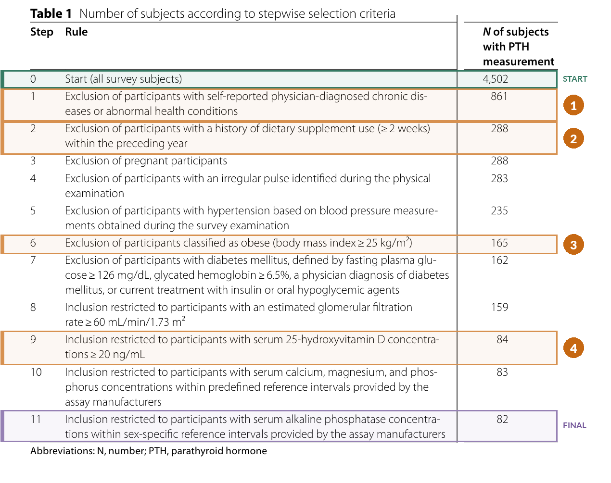
N of subjects with
PTH measurement
Residual subjects ≠ 실제 PTH 분석 N
참고구간은 PTH measurement 열을 기준으로 읽는다.
4,502 → 861
−3,641명 가장 큰 감소861 → 288
−573명 두 번째로 큰 감소235 → 165
−70명 Step 6159 → 84
−75명 여기서 N<120질환·보충제 제외 단계에서 표본 감소가 가장 크며, Vitamin D 기준 적용 이후 n<120
PAPER 1 · PTH · BMC Endocr Disord 2026
이상치 제거 + 복합표본 가중 적용 전후의 PTH 분포 비교
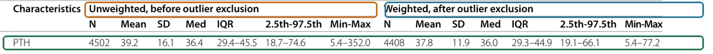
중앙값에서 ±3.5 MAD보다 멀리 떨어진
PTH 값만 이상치로 제외
평균과 중앙값의 변화는 작았으나, 참고상한과 극단값은 상대적으로 크게 감소했다.
이상치 제거는 분포의 상위 꼬리에 주로 영향을 미친다.
Choi R, et al. BMC Endocr Disord. 2026;26:176 · Table 2 · 단위 주: 원문 Table 제목의 ng/mL 표기는 본문·초록 및 수치 규모상 pg/mL로 해석
PAPER 1 · PTH · BMC Endocr Disord 2026
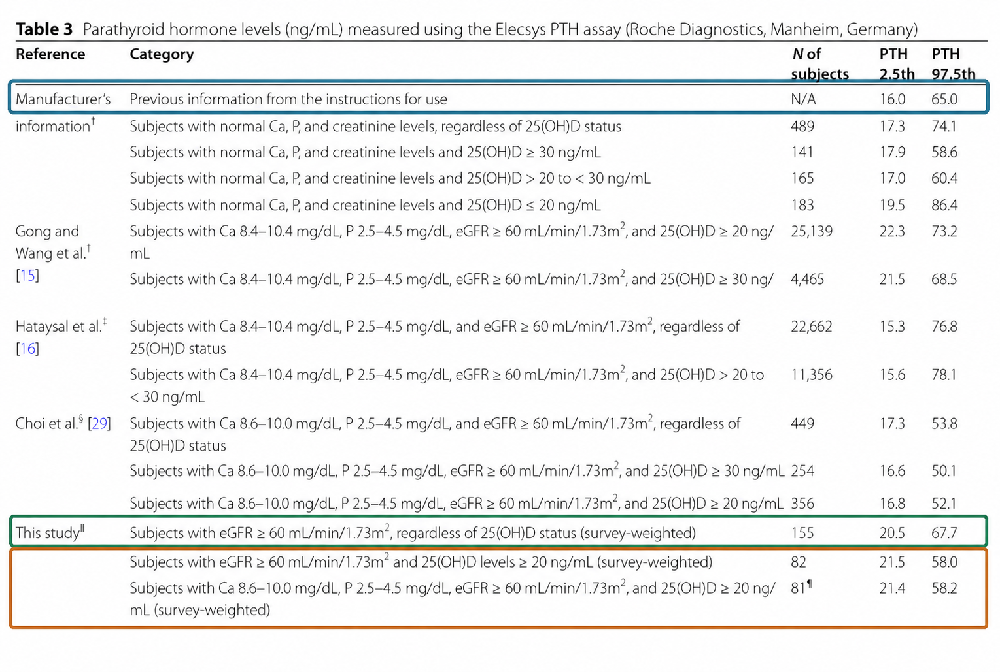
제조사 기기 설명서 기반 참고구간
eGFR ≥60 · 25(OH)D 조건과 무관
20.5–67.7 pg/mL본문에서 대표로 사용하는 주요 참고구간
Vitamin D·Ca·Mg·P·ALP 조건까지 적용
상한은 낮아지지만 표본이 작아 정밀도는 떨어짐
본 논문의 대표 PTH 참고구간은 N=155 기반 20.5–67.7 pg/mL이다.
강화된 기준에서는 상한이 58 pg/mL 수준으로 낮아지지만, 대표 참고구간으로 적용하기에는 표본 규모가 제한적이다.
Manufacturer보다 주요 참고구간의 하한·상한이 모두 약간 높다 · 엄격 하위집단은 기준 강화에 따른 변화를 보여주는 보조 근거Choi R, et al. BMC Endocr Disord. 2026;26:176 · Table 3
PAPER 1 · PTH · BMC Endocr Disord 2026
건강인 기준 강화에 따른 참고하한·참고상한 변화
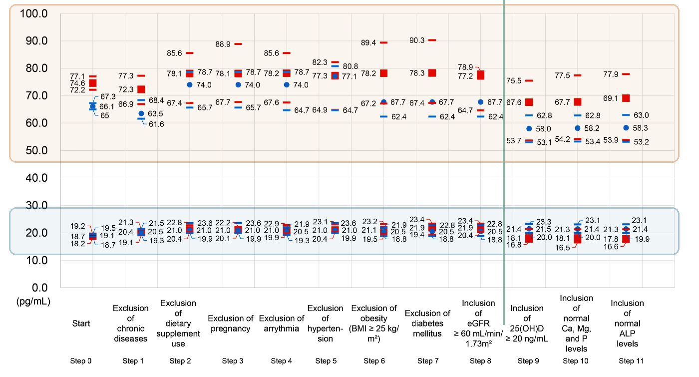
97.5th대부분의 Step에서 2.5th percentile은 비교적 안정
Step 8: 20.5 · Step 9: 20.597.5th percentile은 건강인 기준·가중치·표본 수에 더 민감
Step 8: 67.7 → Step 9: 62.4 pg/mL Table 2 · weighted, after outlier exclusionStep 9에서 25(OH)D ≥20 ng/mL 적용
PTH 측정자 159 → 84명 표본 감소와 참고상한 하향 변화복합표본의 97.5th percentile은 소수의 큰 survey weight 관찰값에 민감하다.
논문에서도 Step 6–8 일부 upper 90% CI가 불안정해 표시되지 않았다.
이를 생물학적 변화라고 단정할 수 없다.
참고하한은 비교적 안정적이지만, 참고상한은 건강인 기준과 복합표본 구조에 더 민감하다. 선정 기준 강화 → 참고구간 축소 · 표본 감소 → 정밀도 저하
Choi R, et al. BMC Endocr Disord. 2026;26:176 · Figure 1 / Table 2
02 · AGREEMENT
Paired data · 관계 / 차이 / 변환 가능성
PAPER 2 · TRIGLYCERIDE · Ann Lab Med 2025
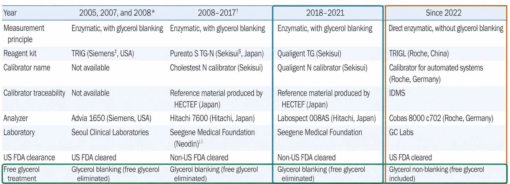
Enzymatic
with glycerol blanking 방식
Direct enzymatic
without glycerol blanking 방식
같은 중성지방이라도 분석법 변화로 체계적 차이가 생길 수 있어, 시계열 비교에는 보정식이 필요하다.
특히 glycerol blanking 유무의 변화가 이 논문의 핵심 출발점이다.2022년부터 중성지방 측정법이 바뀌었기 때문에, 이전 연도와 직접 비교하려면 보정식이 필요하다.
Choi R, et al. Ann Lab Med. 2025;45:291–299 · Table 1
PAPER 2 · TRIGLYCERIDE · Ann Lab Med 2025
기울기 ≈ 1, 절편 +11.9 → non-blanking이 일정하게 +10.7 mg/dL (10%) 높음
국건영은 매년 다른 사람 → 사람으로는 검사법 차이 측정 불가 → 검사법 차이는 같은 검체에서, 과거 자료는 척도만 변환
검사법 차이는 아산 검체 98쌍에서, 적용은 국건영 자료.
CORRELATION
r = 0.997
두 측정값이 함께 증가하는 정도
AVERAGE DIFFERENCE
+10.7 mg/dL
Non-blanking이 평균적으로 더 높음
두 값이 높은 상관관계를 보여도
→
평균 +10.7 mg/dL 차이 → 체계적 불일치
Correlation = 관계 · Bland–Altman = 차이
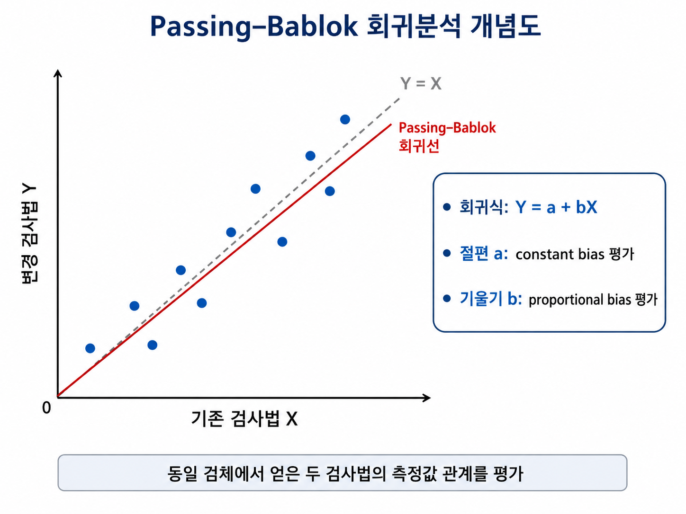
Passing–Bablok = 관계(절편·기울기로 bias의 종류) · Bland–Altman = 차이(평균 차이와 그 흩어짐) · 점선이 무엇인지는 그림마다 확인
검사법 비교는 X도 검사값 → 양쪽 다 오차 · X 오차 시 OLS 기울기 = β × Var(T)/(Var(T)+σ²ₓ) < β (축소), 절편은 증가 → "비례 오차 있음"이라는 잘못된 결론 가능
OLS: Y~X와 X~Y가 다른 직선 · Passing–Bablok: 축을 바꾸면 정확히 역함수
OLS = 잔차² 합 최소화 · PB = 모든 두 점의 기울기의 shifted median = 기울기, median(Y − βX) = 절편 → 다음 두 장
참고 · Deming 회귀: 양쪽 오차를 정규분포로 가정한 최소제곱 · 오차분산비 λ 필요, λ = 1이면 직교회귀 · 대칭성은 PB와 동일, 가정이 맞으면 CI가 더 좁음 (27p 표)
① 모든 두 점의 기울기
Sij = (Yj − Yi) / (Xj − Xi), i < j
관측치 n개 → 최대 n(n−1)/2개
② 정렬하고 shifted median
Sij = −1은 제외 · K = #(Sij < −1)
median의 순위 위치를 K칸 오른쪽으로 이동 (값에 K를 더하는 것이 아님)
③ 절편
기울기 확정 후 α = median(Yi − βXi) (보통의 median)
Theil–Sen = pairwise slope의 median · Passing–Bablok = pairwise slope의 shifted median (shift 크기 K = #(S < −1)) · 절편 = 보통의 median
OLS = 잔차² 최소화 · Passing–Bablok = pairwise slope의 shifted median · K칸 이동의 이유는 다음 장
slope −2 = θ −63.4° · 직선은 180° 회전해도 같은 직선 → −63.4° + 180° = 116.6° → 45° 중심 범위의 오른쪽 끝
숫자로 정렬하면
↑ K = 2개가 맨 왼쪽 · | = slope −1 경계
방향(각도)으로 정렬하면
↑ 같은 K = 2개가 맨 오른쪽으로 wrap-around → median 순위도 K칸 오른쪽
−1 자체에 통계적 의미는 없음. slope 1(45°)을 중심에 두고 직선 방향을 −45° < θ < 135°로 대칭이 되게 펼칠 때의 경계값 −45°를 slope로 쓴 것이 −1. 경계 위의 S = −1은 제외. R: mcr::mcreg(method.reg = "PaBa") 기본값 slope.measure = "radian" = 각도 기준 median
| OLS | Deming | Passing–Bablok | |
|---|---|---|---|
| 오차 | Y만 (X 고정) | X·Y 둘 다 · 정규 · 분산비 λ 지정 | X·Y 둘 다 · 분포 무관 |
| 적합 기준 | 수직 잔차² 합 최소 | λ로 가중한 직교 거리² 합 최소 | 점 쌍 기울기의 중앙값 |
| 이상치 | 민감 | 민감 | robust |
| CI | t 분포 | jackknife · bootstrap | 순위 기반 · bootstrap |
| 주의 | X 오차 시 기울기 축소 | 비례 오차면 weighted Deming | 선형성 전제 (cusum), 원법은 오차분산비 = b² |
선택 기준: X가 기준법(오차 무시 가능)이면 OLS 가능 · 둘 다 검사법이면 Deming(정규·λ 알 때) 또는 PB(분포 미상·이상치) = CLSI EP09 관례 · r ≈ 1이면 셋이 거의 동일 (논문 2: r = 0.997)
| 오차 SD | r | OLS Y~X | OLS X~Y⁻¹ | PB |
|---|---|---|---|---|
| 2 | 1.000 | 1.000 | 1.001 | 1.000 |
| 20 | 0.951 | 0.956 | 1.056 | 1.008 |
| 50 | 0.753 | 0.772 | 1.360 | 1.050 |
library(mcr)
fit <- mcreg(x, y, method.reg = "PaBa",
method.ci = "bootstrap") # Passing–Bablok
getCoefficients(fit)
# EST LCI UCI
# Intercept 7.225 -4.163 24.816
# Slope 1.008 0.929 1.078
mcreg(x, y, method.reg = "Deming") # Deming
coef(lm(y ~ x)) # OLS: 17.69, 0.956
plot(fit); plotDifference(fit) # 회귀·B–A모의자료(오차 SD 20) 출력 · 표는 같은 설정을 오차 SD별로 반복
PAPER 2 · TRIGLYCERIDE · Ann Lab Med 2025 Paired comparison · 동일 혈청 98개
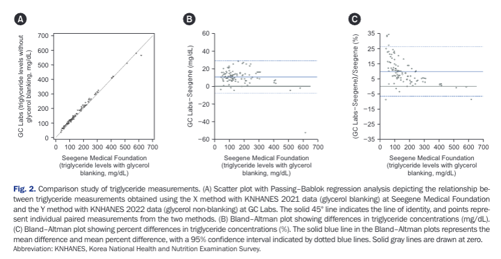
두 방법은 매우 높은 상관관계를 보이지만, 측정값의 일치를 의미하지 않음
새 non-blanking 방식이 평균적으로 더 높음 · 대부분의 점이 0선 위
낮은 TG에서는 같은 절대 차이가 더 큰 퍼센트 차이로 보임
높은 상관관계는 두 측정값의 일치를 의미하지 않는다.
회귀식은 변환 관계를, Bland–Altman은 실제 차이를 제시한다.
Choi R, et al. Ann Lab Med. 2025;45:291–299 · Figure 2
PAPER 2 · TRIGLYCERIDE · Ann Lab Med 2025
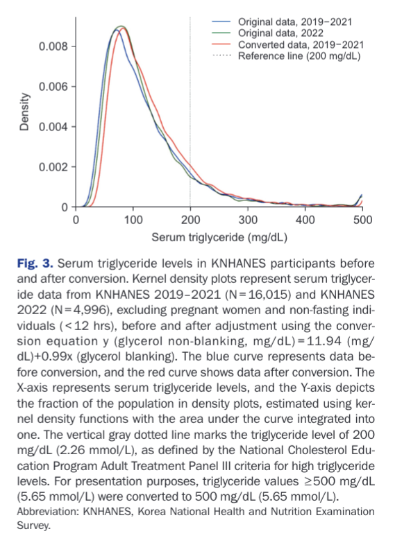
빨간선이 파란선보다 전체적으로 오른쪽으로 이동
같은 과거 사람들의 TG가 새 측정척도에서는 더 높게 표현됨
2019–2021 N=16,015에 보정식 적용
2019–2021과 2022는 서로 다른 연도·다른 참여자
보정 목적은 두 집단을 같게 만드는 것이 아니라 측정 척도를 맞추는 것
측정 척도를 바꾸면 같은 과거 자료에서도 평균 TG와 ≥200 mg/dL 비율이 함께 증가한다.검사법 변화는 개인 수치뿐 아니라 역학 통계에도 영향을 준다.
Choi R, et al. Ann Lab Med. 2025;45:291–299 · Figure 3
Bland–Altman으로 두 방법 사이의 실제 차이와 범위를 평가
기준값도 측정값: 같은 물질을 기준측정법(RMP)으로 잰 값 · 검사값 = 같은 물질을 일상 검사법으로 잰 값 → 방법이 다른 두 측정값의 차이
측정 수준이 달라도 상대적인 벗어남을 같은 척도로 비교
Bland–Altman은 두 검사법 사이의 차이를 평가하고,
bias 분석은 각 검사법이 기준값에서 얼마나 벗어났는지를 평가한다.
기준값의 위계: 기준측정법(RMP, 예: CDC IDMS) 배정값 → 인증표준물질(CRM) 인증값 → 외부정도관리 참여기관 평균(동료 일치, 진도 아님) → 비교검사법과의 차이(Figure 2)는 bias가 아니라 difference
Bland–Altman = 두 일상 검사법 사이의 차이 · Bias = 같은 물질을 기준측정법으로 잰 값과의 차이 (기준값도 측정값, 방법만 다름)
PAPER 2 · TRIGLYCERIDE · Ann Lab Med 2025
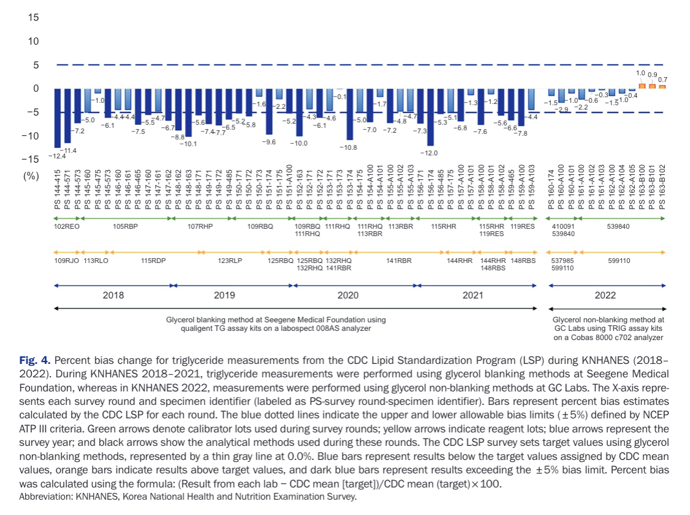
2018–2021 · blanking 2022 · non-blanking0%에 가까울수록 CDC target과 가까움
±5% 안 = 허용 범위
2018–2021의 음의 bias는 측정 척도 차이와 관련되고,
2022 non-blanking 전환 후 CDC 기준과의 comparability가 개선됐다.
Choi R, et al. Ann Lab Med. 2025;45:291–299 · Figure 4
03 · PROPORTION
집락률 / 내성률 / MDR · 분모 각각 확인
PAPER 3 · GBS COLONIZATION · Yonsei Med J 2022
동일 논문에서도 분석 결과에 따라 분모가 달라진다.
비율 해석 전 분모(N)를 확인한다.
Bae HG, et al. Yonsei Med J. 2022;63:717–723
PAPER 3 · GBS COLONIZATION · Yonsei Med J 2022
연도별 GBS 양성/음성 비율을 비교
논문 결과 · 연도별 집락률 차이 없음전국 GBS 집락률은 2018–2020년 10.5–10.8%로 거의 일정했다.10.8% → 10.5%를 의미 있는 감소 추세로 해석하지 않는다.
Bae HG, et al. Yonsei Med J. 2022;63:717–723 · Table 1
PAPER 3 · GBS COLONIZATION · Yonsei Med J 2022
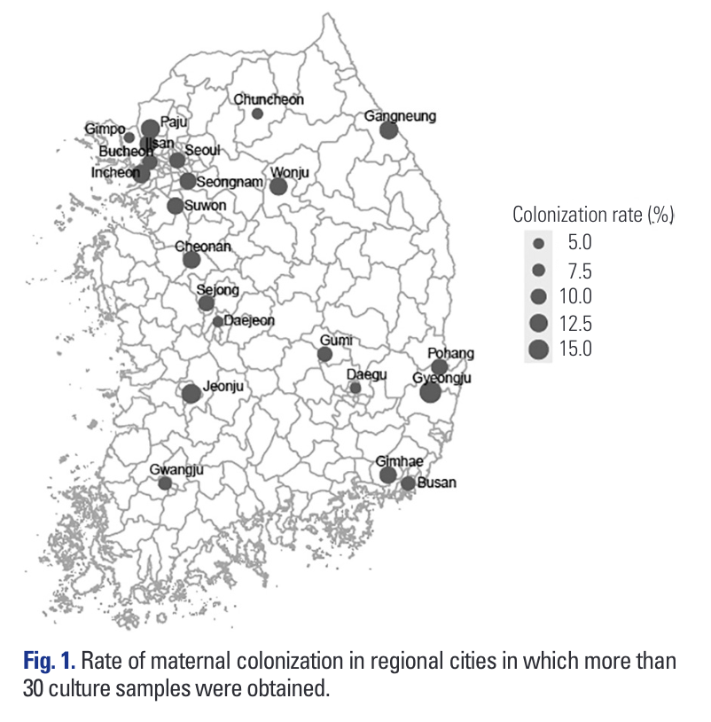
지역 차이는 검체 구성·의뢰기관·검사 규모와 함께 해석해야 한다.
후향적 검사실 자료만으로 지역 자체를 원인이라 할 수 없다.
전국 평균은 10.6%였지만, 지역별 집락률은 9.6–13.2% 범위였다.지역별 집락률 해석 시 지역별 표본 규모를 함께 고려한다.
Bae HG, et al. Yonsei Med J. 2022;63:717–723 · Figure 1 / Table 1
PAPER 3 · GBS COLONIZATION · Yonsei Med J 2022
본 연구의 GBS isolate는 위 항생제에 모두 감수성
2018–2020년 내성률 차이의 p-value는 모두 0.05보다 컸다.
Penicillin을 사용할 수 없는 경우, 대체약 선택 시 감수성 결과 확인이 중요
Penicillin계는 감수성이 유지됐지만, clindamycin·erythromycin은 약 1/3, tetracycline은 약 절반에서 내성이었다.내성 수준이 높다는 것과 시간이 지나며 증가했다는 것은 서로 다른 해석이다.
Bae HG, et al. Yonsei Med J. 2022;63:717–723 · Table 3
PAPER 3 · GBS COLONIZATION · Yonsei Med J 2022

열 순서 · Chloramphenicol → Levofloxacin → Clindamycin → Erythromycin → Tetracycline
S susceptible · R resistant · I intermediate · S-S-R-R-R = 앞의 두 약에는 감수성, 뒤의 세 약에는 내성
분모는 전체 AST 3,512균주가 아니라, 5개 비β-lactam 약 결과를 함께 평가할 수 있었던 1,672균주
주요 MDR resistance pattern · Clindamycin + Erythromycin + Tetracycline 동시 내성
Levofloxacin까지 포함한 4개 약 동시 내성
INTERPRETATION NOTE32.2%는 전체 임산부의 비율이 아니다. 1,672개 GBS isolate 중 MDR phenotype을 보인 균주의 비율이다.
1,672균주 중 538균주(32.2%)가 MDR이었고, 주요 resistance pattern은 clindamycin·erythromycin·tetracycline 동시 내성이었다.MDR 비율과 동시 내성 항생제 조합을 함께 평가한다.
Bae HG, et al. Yonsei Med J. 2022;63:717–723 · Table 2
PAPER 3 · GBS COLONIZATION · Yonsei Med J 2022
논문 Discussion은 기존 근거를 인용해, selective enrichment 없이 direct agar plating을 쓰면 GBS carrier가 최대 약 50%까지 false-negative일 수 있다고 설명했다. 이 연구에서 정확히 50%가 누락됐다는 뜻은 아니다.
10.6%는 검사에서 관찰된 값이다. 검사 민감도가 낮으면 실제 prevalence보다 낮아질 수 있다.
집락률은 생물학적 차이뿐 아니라 검체 채취 부위와 배양 방법에도 영향을 받는다.이 연구의 10.6%는 direct vaginal culture 방식 때문에 실제 GBS 보균율을 과소평가했을 가능성이 있다.
Bae HG, et al. Yonsei Med J. 2022;63:717–723 · Methods / Discussion
Pearson Chi-square test
Asymptotic approximation
X² 통계량을 카이제곱분포로 근사
표본과 기대빈도가 충분히 크면 정확검정과 매우 비슷한 결과가 나올 수 있음
Fisher’s exact test
Exact probability
고정된 주변합에서 가능한 2×2 표를 직접 계산
기대 빈도가 작아도 Type I error가 α를 넘지 않음
검정 선택 기준: 전체 N보다 expected cell count
논문 3
전체 자료 규모 N=33,721
대부분의 비교 셀에 충분한 관찰 수
→ Chi-square test
vs
논문 5
과거 37 vs 최근 209 균주
일부 범주 비교에서 희소 셀 발생
→ Fisher’s exact test
표본과 기대빈도가 충분히 크면 두 결과가 매우 비슷해질 수 있다
이 논문은 비율 비교에 chi-square test를 우선 적용하고, 기대빈도가 작은 경우 Fisher’s exact test를 사용했다. Fisher’s exact test는 희소한 2×2 표에 적합하지만 조건부 검정이어서 다소 보수적일 수 있다. · Agresti (1992), Upton (1992)
04 · MULTIPLICITY
양성/음성 · Ct value · 상대 풍부도 · Alpha/Beta diversity · 개별 OTU
qPCR 양성 / 음성
정한 균이 검출되었는가
범주형 · n (%) · Fisher’s exact
qPCR Ct value
몇 번째 cycle에서 신호가 잡혔는가 · 낮을수록 target DNA가 많음
연속형 · Mann–Whitney U
16S rRNA Relative abundance
그 검체의 전체 read 중 해당 분류군의 비율
합이 100%인 조성 자료 · 하나가 늘면 다른 것이 줄어듦
16S rRNA Alpha diversity
검체 하나 안의 다양성 · Chao1은 종의 수, Shannon은 종 수와 균등도
검체당 값 하나
16S rRNA Beta diversity
검체 사이 군집 구성의 거리 · 검체 쌍마다 거리를 계산
Principal components 기반 차원축소로 시각화
이 논문에서는 CRC군과 대조군 사이 유의한 차이 없음
16S rRNA 개별 OTU 비교
수백 개 분류군을 각각 검정 · 이 논문은 698개
다중검정 → FDR 보정
동일 검체에서도 분석법에 따라 평가 대상과 결과변수가 다르다.
논문 4: observed · Chao1 · Shannon (QIIME) → CRC vs 대조군 차이 없음
| 비율 (%) | 균1 | 균2 | 균3 | Observed | Shannon | Simpson |
|---|---|---|---|---|---|---|
| 검체 A | 50 | 30 | 20 | 3 | 1.03 | 0.62 |
| 검체 B | 10 | 30 | 60 | 3 | 0.90 | 0.54 |
종 수는 같아도 균3이 우점하는 B가 Shannon·Simpson 모두 낮음 → 균등도까지 반영
library(vegan) # otu: 검체 × OTU count
alpha <- data.frame(
observed = specnumber(otu),
chao1 = estimateR(otu)["S.chao1", ],
shannon = diversity(otu, "shannon"),
simpson = diversity(otu, "simpson"))
alpha$group <- meta$group
wilcox.test(shannon ~ group, data = alpha)| 균1 | 균2 | 균3 | |
|---|---|---|---|
| 검체 A | 50 | 30 | 20 |
| 검체 B | 10 | 30 | 60 |
비슷한 검체 → 거리 작음 · 다른 검체 → 거리 큼 · 검체 n개면 모든 쌍 → n × n 거리행렬
| A | B | C | D | |
|---|---|---|---|---|
| A | 0 | 0.1 | 0.7 | 0.8 |
| B | 0.1 | 0 | 0.6 | 0.7 |
| C | 0.7 | 0.6 | 0 | 0.2 |
| D | 0.8 | 0.7 | 0.2 | 0 |
A–B끼리, C–D끼리 비슷 · 검체 500개면 500 × 500 숫자 → 사람이 못 봄 → 다음 장: 좌표로 펼치고(PCoA) 군 차이를 검정(PERMANOVA)
시퀀싱은 검체당 총 read 수가 임의 → count는 비율만 의미(조성 자료, 합 일정) → 한 균이 늘면 나머지가 저절로 줄어 보여 유클리드 PCA가 왜곡 · CLR = log(각 균 / 검체 기하평균)으로 총량을 지운 뒤 PCA(Aitchison)는 조성자료 분석의 중요한 접근
| 균1 | 균2 | 균3 | 균2 / 균3 | |
|---|---|---|---|---|
| A count | 60 | 30 | 10 | 3 |
| B count · 균1만 3배 | 180 | 30 | 10 | 3 |
| A 비율 (%) | 60.0 | 30.0 | 10.0 | |
| B 비율 (%) | 81.8 | 13.6 | 4.5 | |
| A CLR | 0.83 | 0.14 | −0.96 | clr₂ − clr₃ = 1.10 |
| B CLR | 1.56 | −0.23 | −1.33 | clr₂ − clr₃ = 1.10 |
clr <- log(otu + 0.5) - rowMeans(log(otu + 0.5))
prcomp(clr) # CLR-PCA
cmdscale(dist(clr), k = 2) # Aitchison PCoA (동등)다음 장: PCA · PCoA · NMDS가 무엇을 입력받아 무엇을 보존하는지 다이어그램으로
PCA = 자료행렬의 유클리드 기하 · PCoA = 거리행렬의 기하 · NMDS = 거리의 순위 · 같은 자료의 Euclidean distance면 PCoA ≡ PCA, CLR → PCA ≡ Aitchison → PCoA
bc <- vegdist(otu, "bray") # ① 거리행렬
pco <- cmdscale(bc, k = 2, eig = TRUE) # ② PCoA 좌표
adonis2(bc ~ group, data = meta) # ③ PERMANOVA
anova(betadisper(bc, meta$group)) # ④ 산포 동질성> head(alpha, 3)
observed chao1 shannon group
S1 55 55.6 3.68 CRC
S2 50 52.5 3.55 CRC
S3 57 58.5 3.61 CRC
> aggregate(shannon ~ group, alpha, median)
group shannon
1 Control 3.640
2 CRC 3.645
> wilcox.test(shannon ~ group) → P = 0.986
> PCoA 축 설명 비율: PCo1 23.6%, PCo2 10.0%
> adonis2(bc ~ group, data = meta, permutations = 999)
Df SumOfSqs R2 F Pr(>F)
Model 1 0.526 0.225 5.227 0.001
Residual 18 1.811 0.775 NA NA
Total 19 2.337 1.000 NA NA
> anova(betadisper(bc, group)) → P = 0.968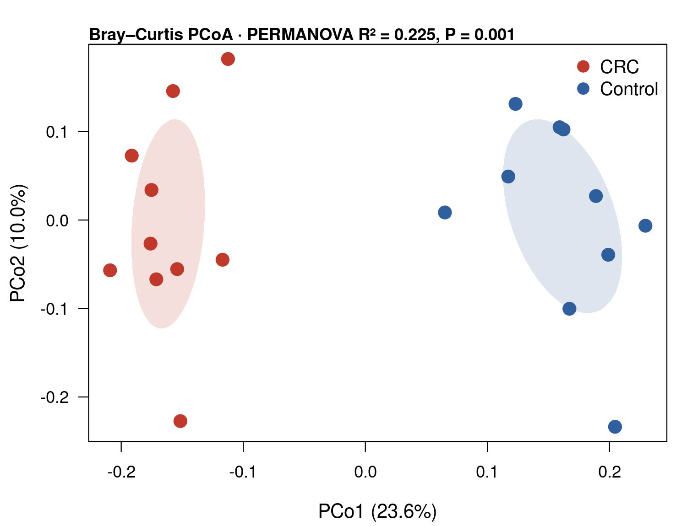
PAPER 4 · CRC MICROBIOME · Sci Rep 2020
한 환자에서 primary adenocarcinoma lesion 2개
대조군의 normal tissue
qPCR은 특정 균의 검출을, 16S rRNA는 전체 미생물 군집의 구성을 본다.같은 조직에서 나온 결과라도 분석법에 따라 질문과 통계 방법이 달라진다.
Kim M, et al. Sci Rep. 2020;10:19915 · Methods / Results
PAPER 4 · CRC MICROBIOME · Sci Rep 2020
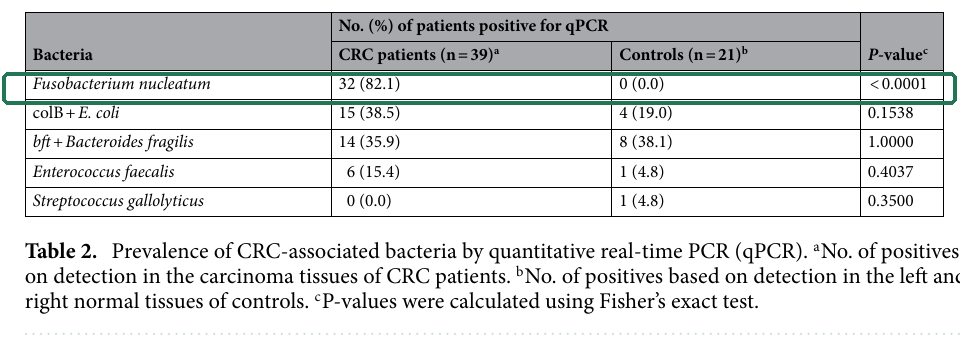
82.1%는 환자 전체의 장내 Fusobacterium 비율이 아니라, CRC carcinoma tissue에서 qPCR로 F. nucleatum이 검출된 비율이다.
CRC carcinoma tissue에서 유일하게 뚜렷한 검출률 차이를 보인 세균
qPCR positive / negative 비율 비교
5개 후보 세균 중 F. nucleatum만 CRC 조직에서 뚜렷하게 높은 qPCR 검출률을 보였다.CRC 82.1% vs control 0% · Fisher’s exact P<0.0001
Kim M, et al. Sci Rep. 2020;10:19915 · Table 2
PAPER 4 · CRC MICROBIOME · Sci Rep 2020
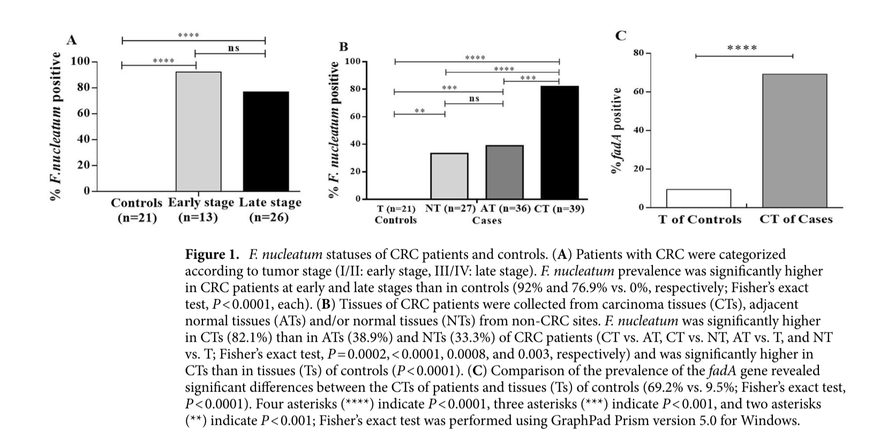
두 CRC stage 모두 control보다 높음 · P<0.0001 each
Early vs Late 자체의 차이는 유의하지 않음
같은 CRC 환자에서도 F. nucleatum은 carcinoma tissue에 더 집중됨
adhesion / invasion 관련 virulence factor
qPCR-positive 조직끼리 비교했을 때 carcinoma tissue의 Ct가 AT/NT보다 더 낮았다. Mann–Whitney U · P<0.0001
낮은 Ct → 상대적으로 더 많은 target DNA
F. nucleatum 검출률은 CRC 초기·후기 모두 높았으며, 동일 환자의 carcinoma tissue에서 더 높았다.검출 여부와 조직 위치에 따른 분포를 구분해 해석한다.
Kim M, et al. Sci Rep. 2020;10:19915 · Figure 1
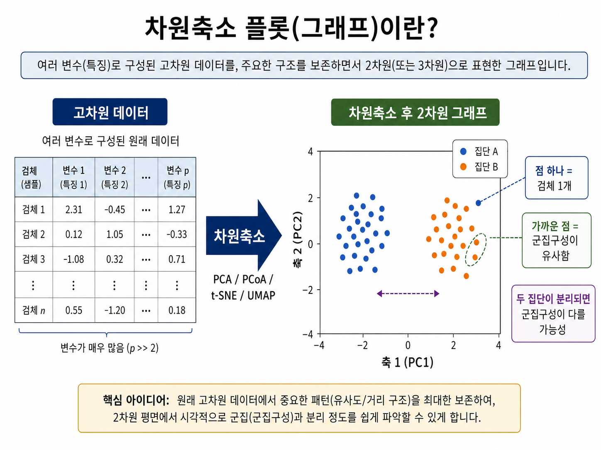
각 조직 검체의 전체 microbial composition을 저차원 공간의 한 점으로 표현
수백 개 OTU 정보가 몇 개 축으로 요약됨
전체 microbial community 수준에서 두 집단이 뚜렷하게 분리되지 않음
Beta diversity는 검체 사이의 전체 미생물 군집 차이를 본다.이 연구에서는 CRC와 control 사이의 α·β diversity 차이가 유의하지 않았다.
Kim M, et al. Sci Rep. 2020;10:19915 · Methods / Supplementary Fig. S2
한 가지 가설만 검사할 때는 하나의 P-value를 해석
비교값 = 각 OTU의 relative abundance(검체 내 read 비율) · 검체 단위로 CRC vs control 개별 검정 (검정법은 논문에 명시 없음)
검정 수 ↑ → 우연히 작은 P-value도 늘어날 수 있음여러 결과를 동시에 유의하다고 판단할 때, 그 발견들 중 거짓 양성이 포함되는 비율을 통제하는 접근
multiple testing correction수백 개 OTU를 동시에 비교할 때는 raw P-value만으로 판단하지 않고 FDR 보정이 필요하다.이 연구에서는 698개 OTU 중 FDR 보정 후 6개 OTU가 CRC와 control 사이에서 차이를 보였다.
Kim M, et al. Sci Rep. 2020;10:19915 · Methods / Results / Figure 2
PAPER 4 · CRC MICROBIOME · Sci Rep 2020
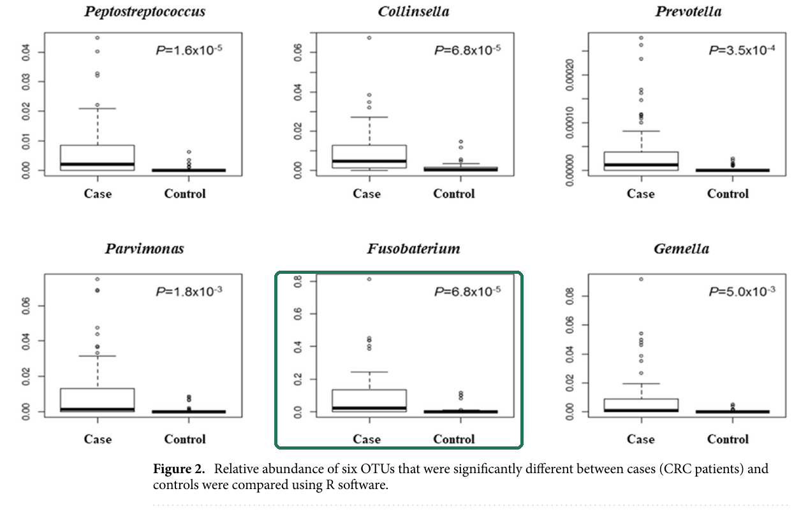
CRC case와 control 사이 relative abundance 차이
전체 군집 수준과 개별 OTU 수준의 결과는 다를 수 있음
qPCR에서도 CRC tissue의 F. nucleatum 검출률이 높아, 두 분석법에서 일관된 연관성이 관찰됨 · 측정값은 서로 다름
전체 α·β diversity에는 차이가 없었지만, 698개 OTU 중 6개 genus는 CRC와 control 사이에서 차이를 보였다.전체 군집 수준의 결과와 개별 feature 수준의 결과는 서로 다를 수 있다.
Kim M, et al. Sci Rep. 2020;10:19915 · Figure 2
PAPER 4 · CRC MICROBIOME · Sci Rep 2020
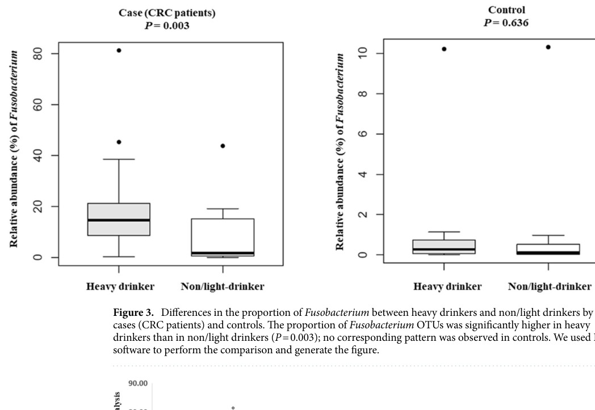
Fusobacterium OTU의 relative abundance 분포가 heavy drinker에서 더 높음
Control에서는 같은 패턴이 관찰되지 않음
CRC 환자에서는 heavy drinker의 Fusobacterium 상대풍부도가 더 높았지만(P=0.003), control에서는 같은 패턴이 없었다(P=0.636).검출 여부(P=0.088)와 상대풍부도(P=0.003)는 서로 다른 분석이다.
Kim M, et al. Sci Rep. 2020;10:19915 · Figure 3 / Table 4
PAPER 4 · CRC MICROBIOME · Sci Rep 2020
CRC 38명 · 39 samples
Control 21명
작은 표본이 통계적 유의성을 제한할 수 있음
대조군 일부가 tubular adenoma였으나 표본이 작아 독립된 adenoma group으로 분석하지 못함
검체 내 상대풍부도 ≥ 1%면 그 균 "양성"으로 정의 (미량 read를 양성으로 세지 않기 위한 임의 기준)
추가 연구로 cutoff 확인 필요
서로 다른 측정 결과를 함께 해석할 수 있음
이 연구에서는 CRC·Fusobacterium·음주 사이의 연관성이 관찰되었으나, Alcohol → Fusobacterium → CRC의 인과 경로는 확인되지 않았다.작은 표본과 제한된 subgroup 분석을 고려해 결과를 해석해야 한다.
Kim M, et al. Sci Rep. 2020;10:19915 · Discussion / Limitations
05 · PROFILE
표현형 · ST/CC · cps · ARG · AMR profile · 시간 변화
PAPER 5 · GBS WGS · Ann Lab Med 2025
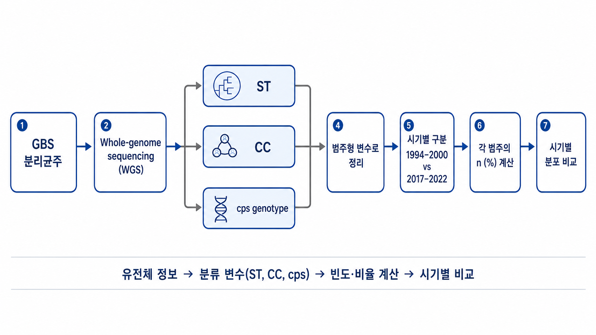
두 독립 시기의 비율 비교
Primary · Chi-square
Sparse expected cells · Fisher’s exact
전체 N만으로 검정을 선택하지 않음
이 논문은 GBS isolate별로 계통·유전자·내성 정보를 통합한 뒤, 과거 37균주와 최근 209균주의 구성을 비교했다.WGS 결과도 결국 isolate 단위의 n (%)로 정리되어 시대 간 비교된다.
Ahn K, et al. Ann Lab Med. 2025 · Methods / Table 1–3
PAPER 5 · GBS WGS · Ann Lab Med 2025
같은 GBS 균주에서 AST로 표현형 내성을, WGS로 계통·ARG 정보를 얻어 두 시대의 내성 구성을 함께 비교했다.표현형과 유전형은 연결되어 있지만 동일한 결과변수는 아니다.
Ahn K, et al. Ann Lab Med. 2025 · Methods
PAPER 5 · GBS WGS · Ann Lab Med 2025
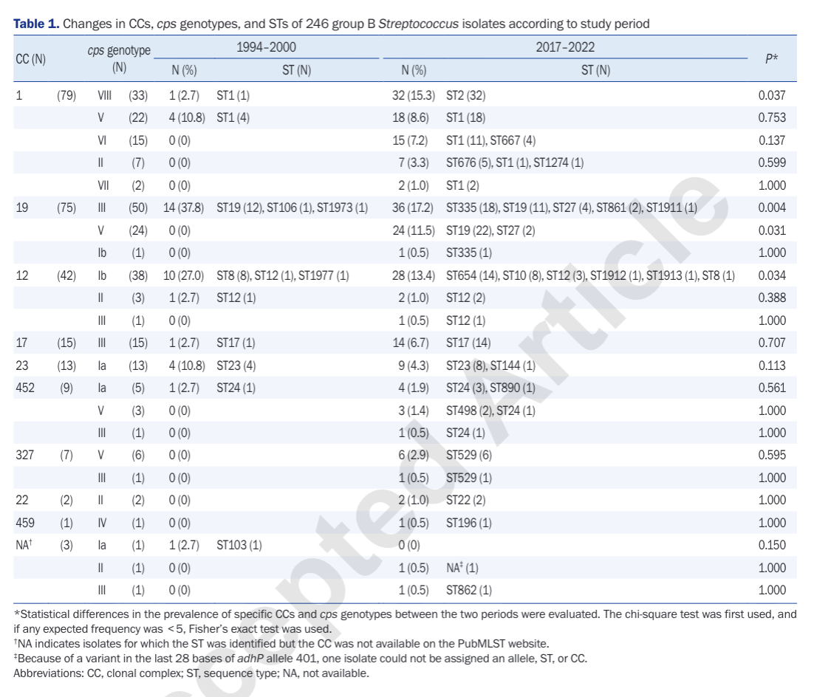
과거 ST1 1균주 → 최근 32균주는 모두 ST2
비율 감소
과거에는 없었지만 최근 집단에서 확인
메인 결과는 원표(Table 1) 값 사용
1994–2000과 2017–2022 사이에 GBS의 주요 계통 조합이 뚜렷하게 재편되었다.과거 우세 CC는 CC19, 최근 우세 CC는 CC1이며, 여러 cps·ST 조합이 증가·감소 또는 새롭게 등장했다.
Ahn K, et al. Ann Lab Med. 2025 · Table 1
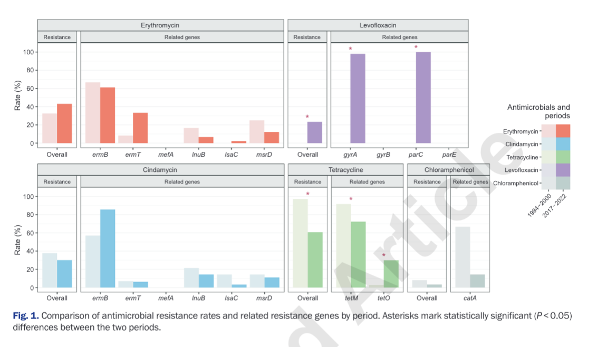
Figure 1. 시기별 표현형 내성과 관련 내성 유전자 변화 · Ahn K, et al. Ann Lab Med 2025
TETRACYCLINE R 97.3% → 60.8% P < 0.001
tetO 2.8% → 29.9% P = 0.017
LEVOFLOXACIN R 0% → 23.4% P = 0.001
tetM 91.7% → 72.4% P < 0.001
표현형 내성과 ARG prevalence를 시기별로 각각 비교 · 균주 단위 일치도는 별도 분석
두 비율의 시기별 변화 방향이 유사해도 개별 isolate의 대응은 별도 2×2 분석 없이는 평가할 수 없음
ARG prevalence와 phenotypic resistance의 시간 변화를 각각 분석했다.
Isolate-by-isolate genotype–phenotype concordance는 별도로 평가하지 않았다.
시기별 phenotype·ARG 비율 변화와 개별 균주의 genotype–phenotype 일치도는 서로 다른 분석이다.이 논문은 전자를 분석했으며, sensitivity·specificity·kappa 기반 일치도 분석은 별도로 수행하지 않았다.
PAPER 5 · GBS WGS · Ann Lab Med 2025
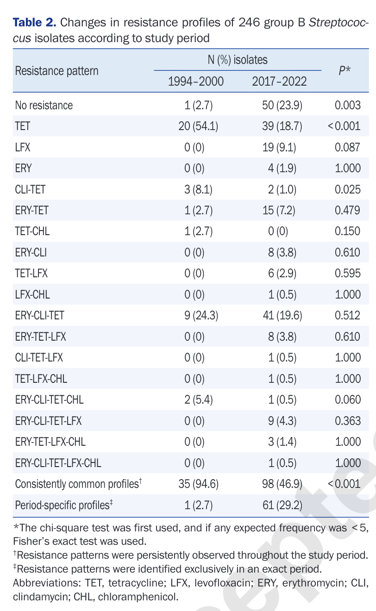
개별 내성률이 아니라 한 isolate의 동시 내성 조합 수
Profile 다양성 증가는 모든 isolate의 내성 증가를 의미하지 않음
Tetracycline 내성이 사라진 것이 아니라 TET-only 비중이 감소
Table 2의 common vs period-specific 전체 비교
No resistance ↑ · TET-only ↓ · 새로운 복합 profiles ↑
AMR profile diversity가 증가함
GBS 내성 profile은 과거 6종에서 최근 16종으로 증가했으며, 최근 시기에만 관찰된 새로운 내성 조합의 비중이 증가했다.개별 내성률과 여러 항생제 내성의 조합을 함께 평가한다.
Ahn K, et al. Ann Lab Med. 2025 · Table 2
무엇을 추정하거나 비교하는가?
범위 · 차이 · 비율 · 군집 · profile
사람 · 검체 · 조직 · 균주
“무엇 하나가 N=1인가?”
n / N (%)에서
무엇을 무엇으로 나눴는가?
독립 자료인가?
paired / repeated data인가?
P-value만 보지 말고
차이의 크기 · 95% CI · 표본수 확인
여러 feature를 동시에 비교했다면
FDR 등 correction 여부 확인
연관성인가 인과성인가?
참고집단 · 검사법 · 표본선정이
결론의 적용 범위를 어디까지 제한하는가?
연구 질문 → 분석 단위 → 결과변수 → 통계 방법 → Figure/Table → 해석P-value는 마지막에 본다.
01
PTH 참고구간 · 집단 차이 검정 X · 검사값 분포 범위
02
TG 검사법 비교 · Correlation ≠ Agreement
03
GBS 집락률 · 분모 및 분석 단위 확인
04
CRC 미생물 · 전체 군집 / 개별 feature / FDR
05
GBS WGS · 계통 / ARG / 표현형 / profile
06
논문 통계 · 연구 질문 → 분석 단위 → 방법
연구 질문 → 분석 단위 → 결과변수 → 통계 방법 → Figure/Table → 해석
Zarathu Co., Ltd.